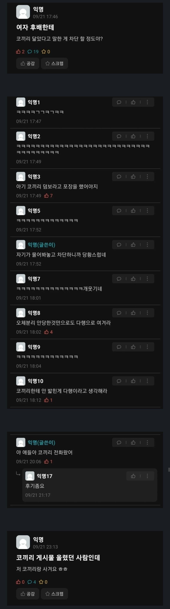
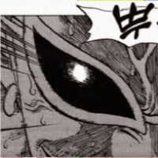
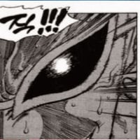

여자 후배한테 코끼리 닮았다고 말한 게 차단 할 정도야?
댓글
?
?
사귀어서 족치는거 아니냐
친구는 여사친한테 바다코끼리 닮았다고 했다가 진짜 분위기 싸해졌음 ㅋㅋ
wwe ufc
?
쟤한테 코끼리는 우리가 생각하는 코끼리랑은 다른 동물인 거 아닐까
그렇지 않고서야..
기만이였네
아 씨발


작년엔가 용산 아이파크 몰에서 전여친이랑 '당신의 생년 월일로 동물로 변신해 보세요' 라는 스티커 사진 뽑아주는거에서 나 고릴라 나오고 여친도 암컷 고릴라 나와서 ㅈㄴ 웃었다가 그날 잘때까지 삐져있었음
고릴라 커플 귀엽지 않음?
여자친구 로랜드 고릴라였어?
ㅋㅋㅋ 생년월일 만 입력해서 뽑는거였는데 왜 삐진지 모르겠음
그러게 같은 종 나왔으면 엄청 기쁠거 같은데 ㅋㅋ
니여친 코끼리 ㅋㅋ
아이시팔
덤보
코끼리성애자였노
이쁘니까 저런 장난치고 wwe걸수잇는거지
진짜로 코끼리같이 등치크고 그게 컴플렉스인 사람한테는 보통 저런 말 못함ㅋㅋㅋ
병신인줄 알았더니 알파였어? ㅆㅂ럴
후배 얼굴 ㄹㅇ 궁금한데